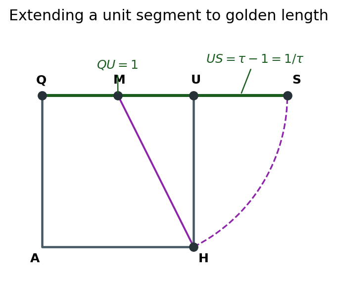
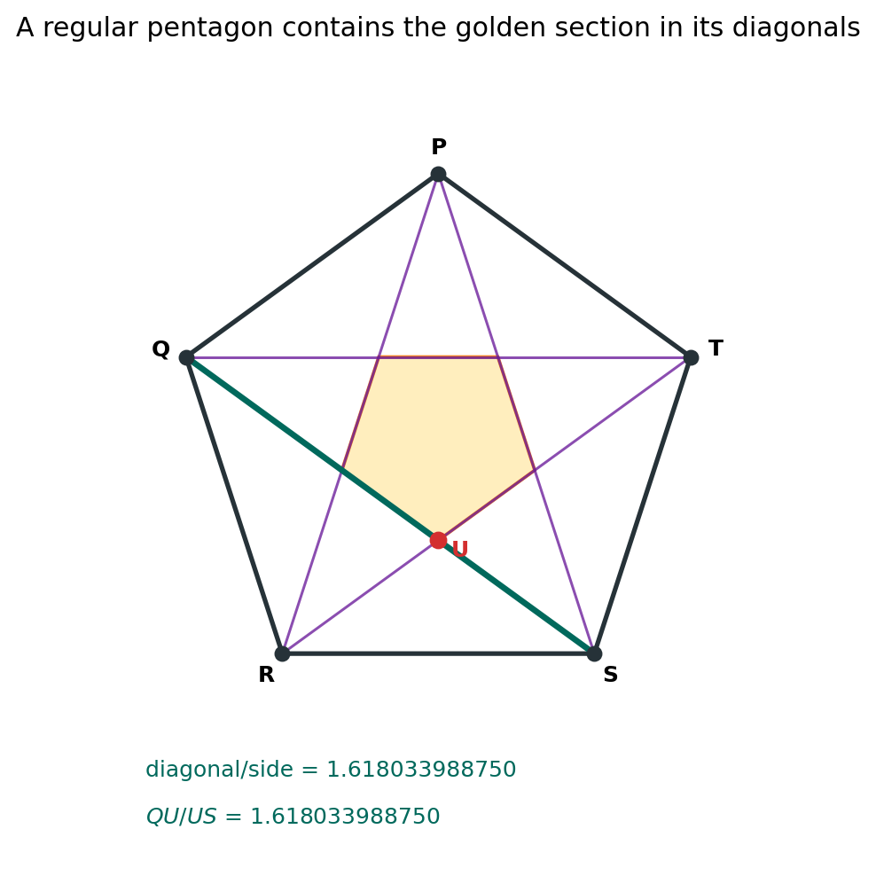
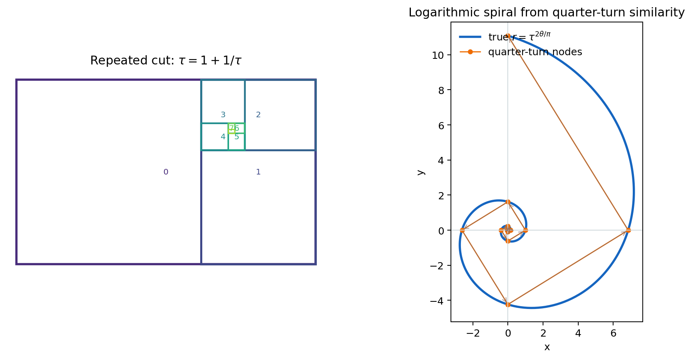
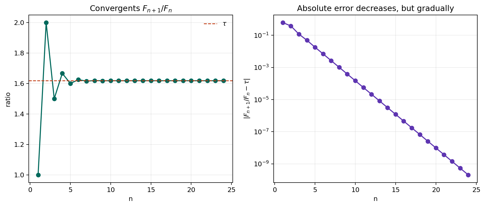
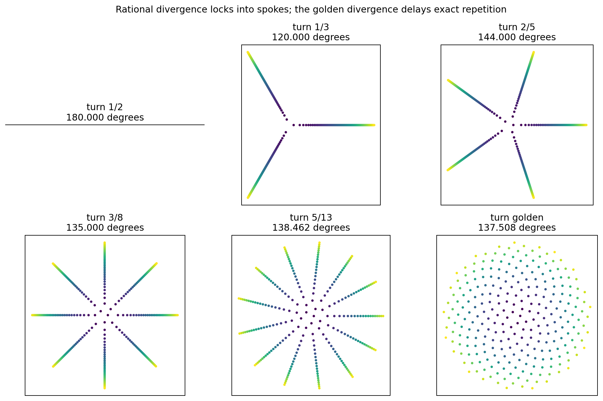
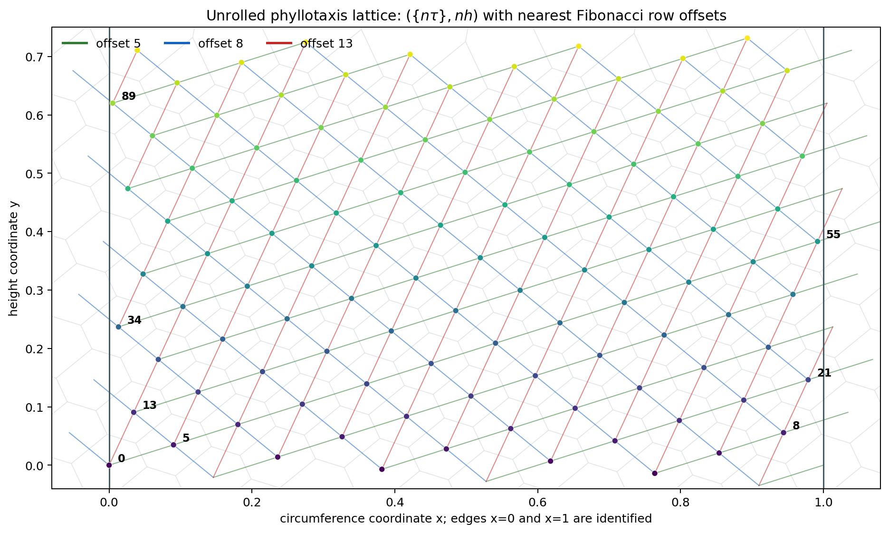

Source Span
Printed pages 160-174; PDF pages 178-192.
Core Ratio
\(\tau=1.618033988749895\), with \(\tau^2-\tau-1=0\).
Geometry Thread
The same number acts as a segment ratio, diagonal ratio, spiral scale, and near-return controller.

The golden ratio \(\tau\) links constructible segments, pentagonal symmetry, logarithmic spirals, Fibonacci approximants, and plant-like spacing patterns.
Printed pages 160-174; PDF pages 178-192.
\(\tau=1.618033988749895\), with \(\tau^2-\tau-1=0\).
The same number acts as a segment ratio, diagonal ratio, spiral scale, and near-return controller.

Extreme and mean ratio from a Euclidean segment diagram.
Diagonal and split ratios reproduce \(\tau\).
Quarter-turn self-similarity rescales by \(\tau\).
Consecutive ratios converge to \(\tau\).
The golden turn creates Fibonacci best returns.
Nearest parastichy rows depend on the strip metric.
$$\tau^2-\tau-1=0$$
1.618
1.618
\(QS=1.618\), \(QU=1.0\), and \(US=0.618\).
Quadratic residual and arc endpoint residual are both \(0.0\).
1.618
\(QS/QU=1.618\) and \(QU/US=1.618\).
Outer-to-inner side ratio is \(2.618=\tau^2\).
$$2\cos(\pi/5)-\tau=0$$

$$\Delta\theta={\pi\over2},\qquad {r_{n+1}\over r_n}=\tau$$
1.571
1.618
Angle-step deviation \(1.78\times10^{-15}\); radius-ratio deviation \(2.22\times10^{-16}\).


$$ {F_{n+1}\over F_n}\to\tau $$
2.08e-10
0
Cassini, Lucas-neighbor, Lucas recurrence, and double-index identities all pass.
Maximum tau-power identity residual is \(5.68\times10^{-14}\).
0.382
137.508 deg
\(1,2,3,5,8,13,21,34,55,89,144\).
Recommended disk turns: \(1/3,\ 2/5,\ 3/8,\ 5/13,\) and golden.


6
0.006966
8, 5, 13
Four hundred finite Voronoi segments are plotted in the strip diagram.
Rational repetition creates spokes because the angular return eventually closes exactly.
Fibonacci near-returns replace exact spokes and distribute points more evenly.
For \(k=3\) through \(9\), every standard height lies inside its transition interval.
For standard \(k=6\), inspect rows \(8,5,13\).
The golden cut has whole-to-larger and larger-to-smaller ratios equal to \(\tau\).
Pentagon diagonals and pentagram splits reproduce the same ratio.
Quarter-turn self-similarity and Fibonacci convergence are two faces of the same invariant.
Golden divergence avoids exact spokes and produces Fibonacci near-neighbor rows.